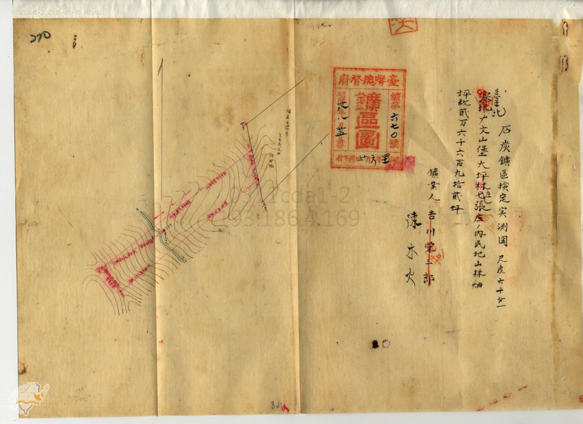
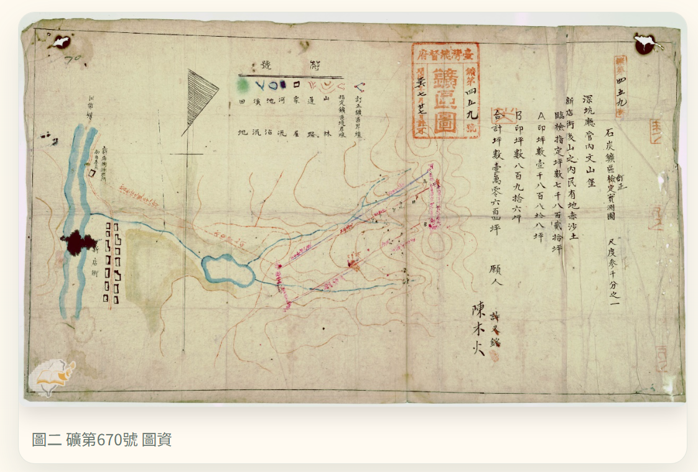
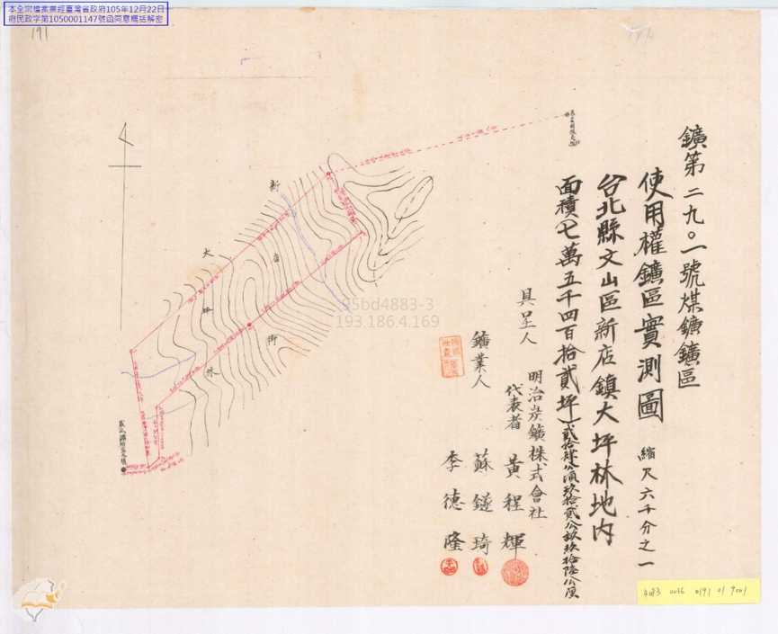

明治煤礦
文/高淑華
明治煤礦乃由礦第459號、礦第670號、礦第2901號合併後，於民國35年（1946）用（明治炭礦會社）名稱，向台灣省行政長官公署工礦處登記使用權核發。
坊間很多介紹新店礦業的文章，大都將明治煤礦歸入振山煤礦、和美煤礦所屬，然而，到底這三者之間是否有關係呢？
我們訪問到翁東源先生，據他表示，他的父親民國25年來新店，轉至明治煤礦工作，直到民國39年明治煤礦關門後，又轉去安坑在今日錦繡山莊附近的礦坑工作，其父深知箇中原委。經訪問後，我們再進一步深究文獻上兩者之間的關係，結果就如翁東源所說的，明治煤礦和振山煤礦並沒關係。
但今日原在北宜路邊的礦坑入口在訪問的今時，已圍起圍牆準備蓋新屋了，一個熟悉的文史點不見了！

說明：礦第459號 新店街後山之內民有地赤沙土，
明治35年（1901）許又銘出願 明治37年（1903）設代理人陳清秀 明治39年（1905）讓渡陳清秀 大正元年（1912）陳清秀過世兒子陳木火相續 昭和7年（1932）與 駱世安、劉永添、黃程輝 的礦第670號合併。

說明：明治41年（1908）吉川榮吉石炭採堀願許可 明治43年（1910）礦權讓渡陳木火 昭和2年 讓渡駱世安 劉永添 昭和7年（1932）駱世安、劉永添、黃程輝合併礦第459、670 。

說明：礦第2901號 位於臺北州文山郡新店庄大坪林地內。
昭和8（1933）蘇鐩琦出願 昭和11（1936）受礦第140號與670號有重疊處 提出申請修正 經過實地勘查，發現文山煤礦與第 670號 與礦第2901號邊界線有所重疊。擔心邊界模糊會導致「侵掘」（侵佔/重疊）問題，引發糾紛，請當局儘速派員進行「實地臨檢」（現場勘測），以釐清界線並給予許可。
說明：昭和19年（1944）明治炭礦株式會社得到設定礦第2901號的使用權。
說明：1946臺北縣礦業權登記換照案說明與振山煤礦並無關係。因為礦坑邊界的重疊、模糊，民國35年原2901號礦業主蘇鐩琦、李德隆的聲明表明，振山煤礦並無關係。